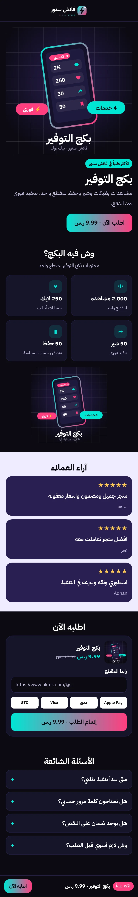
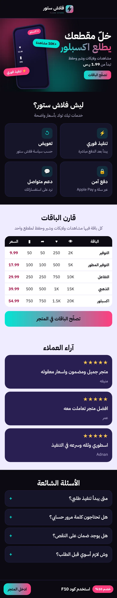
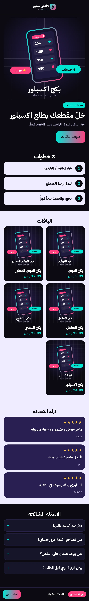

صفحة الهبوط: 3 اتجاهات
كلها مبنية على عناصر صفحات الهبوط الجاهزة في سلة، بألوان المتجر وأسعاره الحقيقية. اسحب لتحت داخل كل تصميم.



كلها مبنية على عناصر صفحات الهبوط الجاهزة في سلة، بألوان المتجر وأسعاره الحقيقية. اسحب لتحت داخل كل تصميم.


